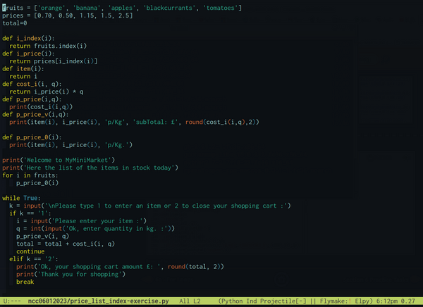
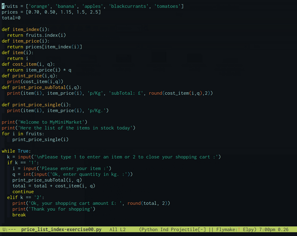
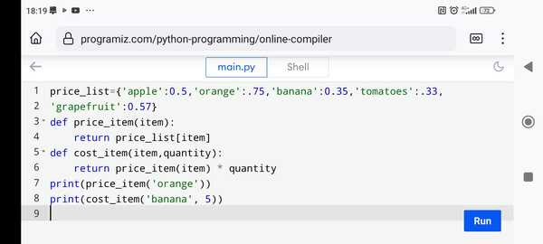

NCC-Log-Readme
Table of Contents
:ID: feef258d-ff21-4c5a-963b-9d92d84213a9
Still dunno whether writing out this report in Eng or in my Lang., so have a quick log report on wtf I'm doing. ;; Sun 4 Dec 14:29:54 GMT 2022 [✓] Let's have a lines about what done so far as I've experienced some gaps in my mental log on it.
Started Level 3 on 04/11/2022 [✓]
Tasks 1.a, 1.b, DL (deadline) by 11/11 done as second try [✓] I could not include the speaker notes [*] As struggling with pp, pptx, I had a org-HTML version posted on GitHub and sent by email but as far as I know, not read, received and probably banned as email is not a mean for submitting task anymore
Fri 18 Nov 2022
I did a new version, including the speaker notes, and as an individual file per task (1.a, 1b) but submitted 1.a only, submission link for 1.b was closed, and not conceded new date as it was (unexpectedly) target achieved in the first review by teacher. 1c, 1d deadline by 18/11 23:59 (I did not get it, so started working on them at home after coming from NCC), and tried submitting but failed.
Fri 25 Nov 2022
Submitted 1.c, 1.d on 25/11 1c & 1d after merged them and get conceded ad-hoc an extension submitting date from Mr Lawrence, new version of 1b declared redundant as the return evaluation declared it achieved [✓]. Working hmw slides projs entirely in class, submitted 2.1, 2.2, 2.3, (I learn afterwards that 2.3 had DL for 02/12)
Fri 02 Dec 2022
2.3 extended version, as declared target not achieved (just before getting out from NCC, though) so I'd got time for submitting 02/12 23:59 [✓] done
DONE 3.1, 3.2
DL better on 02/12 but by 05/12 3.5 DL 09/12 but better check online on NCC portal, Risk-Management task 3.1 & 3.2 submitted [✓] done
3.3, 3.4,
Have also deadline by 05/12
submitted task 3.3, 3.4 [✓]
DONE draft notes
- 3.3
Describe how to reduce the risk and follow mitigation, taking into consideration the following: a) missing/unclear requirements [✓] b) skills shortage c) time d) budget e) resource shortage f) decision-making.
- Budget
Regarding interdependence, is not hidden science to infer that budget issues have a direct correlation with the entire performance of the project, its schedule and the quality of deliveries. I have found specialists mention as the top-frequent-ranked two moments in the process of getting into cost overrun issues, at starting, which they call tight-fitting budget planning and in execution which is usually a consequence of inaccuracy in estimations but since the likelihood of getting into cost issues is around 70% in the software industry, this mishap should make it get removed from the list of unpredictable facts. relocate | transfer
overseen constraints | restrictions
Time is a pillar in the project management.
Risks related to decision-making is an entire science. Some research report that propensity to take risks or avoid and spent time in gaining information and working in group are connected inversely.~ - DONE 3.4
For each of the identified risk types, propose potential mitigations, taking into consideration key elements of the following: a) Scrum b) Kanban c) Waterfall d) Agile.
DONE 3.5
dl 09/12, R.M.,The Critical Path, task 5 [✓] submitted Explain what is meant by a project’s critical path
DONE draft notes
form P.M. dict. In project management, the critical path is the longest sequence of tasks that have to be completed. This is to successfully complete a project.
- Behind the scenes, (RECAP: as said in previous comments, the time variable involves a mitigation plan for time-related issues that will start by default at the start of the project) I would call it a critical path chart, an easy-to-visualize abstraction to monitor contingencies related to control of work time, easy to share, to use in meetings (related to timeline assessment) to identify, detect delays, establish dependencies evaluation schedules (especially when there are more than one task running simultaneously or they are connected by mutual dependencies)
- Terminology
- Slack How long an ativity can be delayed without extend or increasing the completion time
- facing more than one dependency the highest EF (Earliest-Finish) preceding an activity will be the ES (Earliest-Starting) activity time, (then add its own t so that have its own EF earliest-finish time).
- the proj. completion time is the highest of the EF (Earliest-Finish) time
- When doing the backwards pass we obtain the latest-start-times(LS) by subtracting the Actv. time from the LF, the latest-Finish-time of its successor.
- facing two dependencies when doing the backwards pass, the latest-finish-time(LF) of an activ. must be the minimum of the LS (Latest-Start-time) of its successor.

- Slack How long an ativity can be delayed without extend or increasing the completion time
Fri 09 Dec 2022
Task 6 Team management Positive working relationship and conflict management are essential to resolving technical issues that may arise between project members. (make it) In a Word document, [✓]
DONE a. Explain the importance of developing working relationships with other teams
[my keywords] Positive working relationships [✓] | team[✓] | other teams [✓] Technical issues [✓]
Positive working relationship and conflict management are essential to resolving technical issues that may arise between project members.
3.6 Explain the importance of developing working relationships with other teams.
Introduction
Two remarkable keywords are mentioned in the description of this task, 'working relationships' and 'positive thinking. Let me sketch out them first to give some context to my view on this.
Generally speaking, positive working relationships are mandatory in any work environment.
Here let's use the more broad meaning for 'positive' as anything we assess being in direct correlation to a given target. And, in this sense, positive thinking itself has become standard protocol for dealing with everyday problems of any kind as well, though the definitions it makes of things as it maps and marks its objects and the scope of conventions it assumes as proposal rules are not of unanimous adoption yet, and probably never will be. However, a handful of principles arise by default, and we learn to adopt them as we integrate ourselves into the culture since the heart of this, as I see this, is the law itself.
Law has different, or better said, global and local configurations and implementations, their how-to ‘s and why 's are out of scope here, but a keystone we have to generate order in this matter is that all those definitions and statutory prerogatives we call rights, privileges, and responsibilities we all live and work for and around are the true package of positive, and negative by contradiction, considerations and concerns that define or predefine any kind of human interaction, therefore, any possible conflict.
There are different approaches to this subject, I did not mean to lecture on this but to point out a pattern that works in any case, and the reason I felt I should start with the observation that follows: ‘…yet its suitability is defined by its friendship addressing with given scopes, or ambit, all of them shall end up law-abiding and in no manner prevailing over it’.
That is the pattern, now to breakdown particularities what we would have here is a context which should be defined by the scenarios the software industry involves by nature, as product, what its production involves and what labour involved demand.
Now let's get started by the conclusion.
The first thing I wanted to highlight is that working in community fashion has a special meaning in the software industry, even if we work freelance. As potential members of a development team, this is more tangible, of course. We submit our production to a community that, in turn, has been here before us producing things that, in practice, are our input material.
Also is true that there is nothing in the history of technology that has not been the result of a network, a community that has previously been accumulating small contributions on which we built our craft, and no contribution or contributor, in particular, even the most innovative ones, breaks this rule. Let us think, for example, of two well-known cases: the contribution of Newton or Einstein. Newton already used to point out he could see further because of “standing on the shoulders of giants”.
Therefore anything we do in the software development industry is done under the conventions of a cut edge community and with the community itself with an eye on whatever we produce individually or as part of a team.
So that a explicit positive mode by default is the communication language that could build efficient working teams.
Once we notice that protocol matters in the work interaction, the next might be to brainstorm a list of recommendations that are or would be directly connected if we were to outline a minimal approach.
Here my top nine considerations:
- Notice that in some legislations, computer code, coding languages and elaborations we were able to make with it are considered a way of expressing ideas and as such is protected as part of free speech.
- Communicate ideas or opinions with transparency criteria.
- Accepting critique is preliminary to submitting critique.
- Conflict is there out, always has been and always will be, get comfortable with confrontation but only constructive terms shall be supported.
- Look after both your interest and the others at once.
- In case of disruptions look after for terms acceptable for all involved.
- Invest in yourself.
- Get disciplined about collective agreements.
- Take your time before saying yes to work requests but if you say yes get disciplined about outcomes also on those that might proof otherwise a previous plan, concept or consideration.
DL 09/12/2022 on a word doc. Ref NCFE/L3CCP 603/5793/9 pag. 14. I was starting to sketch my answer to this topic pointing out its relationship to conflict management, a very extended subject when is about project management, but it seems that the instructor had broken down the subject, and this, the 3.6-bit is going to be the very first stage when on identifying the arising of conflict in real work environments, so it would be probably not necessary to jump into a so deep connection but since this topic bit is also the first work field related to prevention in an eventual mitigation plan related to conflict management and effective delivery of software, as mitigation and prevention are two sides of the same plan separated by time, and the triggering eventualities are always present, we shall start straight to elaborate on the working relationships we would need to become facilitators of the work flow, as we call it in project management slang language, efficiently when the differences show up.
Fri 06/01/2023
DONE Editing 3.6 Task
Intro
;;;;;;;;;;;;;;;draft to paste on the xdoc asgnmnt. Having been instructed to explain the context of the latter statement I should say that the idea behind mentioning the legal implications is methodological, as once identified what the max risk for every context, work field, or case is, the next draft is to have a pool of options to mitigate consequences, and in between, being proactive and take steps to prevent conflicts from escalating to the point where legal action is necessary. As we have to gain expertise in this area of practice, I would call this point of view 'defective', or perhaps, using here the suffix 'ual' so that, a 'defectual' approach to management.
A defectual approach to something is a kind of reverse engineering to understand how to prevent the system from issues by understanding failures. It can be an important tool for understanding and solving problems, especially when the focus is on identifying and correcting specific issues or defects. By analyzing failures or problems and identifying patterns in their occurrence, it is possible to understand the root causes of the problems and develop strategies to prevent similar problems from happening in the future. Actually, designedly or not, developing techniques to deal with issues starts back by collecting failures first, then identifying patterns in their malfunction, understanding them, then taking proactive measurements, or making rules to prevent them. In fact, it is often the case that protocols, frameworks, and policies currently in use were developed in response to problems or failures that have ever occurred. Addressing potential problems before they occur can involve making rules or guidelines to specifically address the problems at least as they have been identified, as well as related problems that may be extensions of those initial problems.
Now, apart from the obvious way of dealing with this risk as it is to have legal counsel or a human resources professional involved in the conflict resolution process. As they can provide guidance on the legal issues at hand and help to ensure that the resolution process is fair and compliant with applicable laws and regulations. The main purpose of this address to the question is to prevent by being proactive, having a plan, and having clear policies and procedures in place.
Some strategies in this direction include:
Effective communication: Encourage open and honest communication, and work to establish clear channels of communication to help prevent misunderstandings and resolve issues before they escalate. Conflict resolution training: Provide employees with training on conflict resolution and communication skills to help them handle conflicts more effectively. Fair policies and procedures: Develop and communicate clear policies and procedures for addressing and resolving conflicts in the workplace. Mediation: Use mediation or other alternative dispute resolution techniques to help resolve conflicts before they deepen.
4.1 Working relationships with other teams,
teams with different settings or interests, as this does happen nowadays? When working with other teams that probably have different working styles, interests, organisation, etc. is also essential to be proactive in managing conflicts that may arise, and extensions of the above-outlined mind setting are still valid. Some strategies that can be effective in this situation include: Clearly communicate expectations and roles: Make sure that all parties have a clear understanding of their responsibilities and how they fit into the overall project or goal. Identify common goals: Look for areas of common ground and focus on shared goals to help build trust and cooperation. Use a mediator: If conflicts cannot be resolved through direct communication, consider using a mediator or other neutral third party to facilitate the resolution process. Establish clear lines of communication: Establish clear channels of communication and make sure that all parties have a way to voice their concerns and suggestions. Be open to compromise: Be willing to compromise and find solutions that meet the needs and interests of all parties involved. By using these strategies, you can effectively manage conflicts and work effectively with external teams, even when there are differences in interests.
4.2 Positive Thinking as Proactive to Conflict Mindset.
Here, in the improvement of productivity, is where positive thinking as a mentality fits. As in working environments, positive thinking can be a powerful tool for improving performance, building strong relationships, and creating a more positive and productive work culture. Some specific ways in which positive thinking can be beneficial in the workplace include: Improved performance: A positive attitude can help individuals to stay motivated and focused, and can lead to better performance at work. Stronger relationships: A positive attitude can help to build trust and strengthen relationships with colleagues, clients, and customers. Enhanced problem-solving: A positive mindset can help individuals to approach problems in a more creative and constructive way, leading to better solutions. Improved communication: A positive attitude can encourage open and honest communication, which is essential for building strong working relationships and resolving conflicts. Greater resilience: A positive attitude can help individuals to be more resilient in the face of challenges and setbacks, and to bounce back more quickly from failures.
In general terms this can involve re-framing negative thoughts or experiences in a more positive light, setting goals and working towards them, and cultivating gratitude and mindfulness. However, positive thinking is not about ignoring or denying negative experiences or challenges, but rather about finding ways to cope with adversity and build resilience. And, whit this experience, contribute to a more positive and productive work culture, where individuals are more likely to collaborate and support one another. While it is not always easy to maintain a positive attitude, especially in challenging or stressful situations, it is an important skill that can have a powerful impact on work performance and relationships.
4.3 Conflict Management Techniques and Effective Team Collaboration
First, we probably should highlight how collaboration can be affected in both positive and negative ways in the dearth of a system to deal with conflict. And in doing this I find it more elucidative to look over what a so potent tool collaboration is by describing how good is whenever is present and how risky a scenario becomes when is not promoted conveniently.
On the positive side, collaboration can lead to a number of benefits, including: Greater efficiency: When people work together, they can often accomplish more than they could on their own. Improved problem-solving: Collaboration allows people to bring different perspectives and ideas to the table, which can lead to better solutions. Greater creativity: Collaboration can foster creativity and innovation, as team members inspire and challenge one another to come up with new ideas. Stronger support: Collaboration can provide a sense of support and encouragement, which can help people feel more confident and motivated. More fun: Working together with others can be enjoyable and rewarding, and can help to create a positive and enjoyable work environment.
On the negative side, collaboration can also be affected by a number of challenges, including: Communication breakdowns: Miscommunications or misunderstandings can lead to conflicts or delays in collaborative projects. Different working styles: Team members may have different approaches to work, which can lead to misunderstandings or conflicts. Lack of trust: If team members do not trust one another, it can be difficult to establish effective collaboration. Conflicts of interest: Collaboration can be difficult if team members have conflicting interests or goals.
- 4.3.a Collaboration with external teams[?]
When collaboration is related with external teams it usually understood as outsourcing. And Outsourcing is a common practice in the software industry, and it can be a useful tool for addressing a variety of issues and challenges. However, it is not always the best or only solution, and it is important for organizations to carefully consider the pros and cons of outsourcing before making a decision.
Outsourcing can be a useful tool for addressing issues such as: Access to expertise: Outsourcing can allow organizations to access specialized expertise or skills that they may not have in-house. Cost savings: Outsourcing can be a cost-effective way for organizations to access certain services or capabilities. Flexibility: Outsourcing can provide organizations with the flexibility to scale up or down their resources as needed.
However, outsourcing can also have drawbacks, such as: Loss of control: When organizations outsource certain functions or activities, they may lose some control over how those tasks are performed. Communication challenges: Working with external partners can sometimes be more complex, and can involve additional communication challenges. Cultural differences: Outsourcing can sometimes involve working with partners from different cultural backgrounds, which can present additional challenges. Overall, outsourcing can be a useful tool for addressing certain issues and challenges in the software industry, but it is important for organizations to carefully consider the pros and cons before making a decision.
- 4.3.b How-to Promote a effective team collaboration?
In my opinion, collaboration arise not so difficult if the land is encouraging, it could seem recurrent but we are social by nature. Here are five top rules or techniques for effective team collaboration: Establish clear goals and roles: Make sure that all team members have a clear understanding of the team's goals and objectives, as well as their own roles and responsibilities. Effective communication: Establish clear channels of communication and encourage open and honest dialogue among team members. Collaboration: Encourage teamwork and collaboration, and look for ways to pool knowledge and expertise to achieve shared goals. Respect diversity: Recognize and value the diverse backgrounds, experiences, and perspectives of team members. Problem-solving: Encourage a culture of continuous improvement and problem-solving, and work together to find creative solutions to challenges and roadblocks.
- 4.3.c A mention of specific conflict management techniques for effective sessions of team collaboration.
There a few of techniques for sure but this is my favorite:
- Win-win solution | accommodation
The idea of a win-win solution to conflicts in work environments is similar to the concept of accommodation, which involves finding ways to address the needs and interests of all parties involved in the conflict. In a win-win solution, both parties involved in the conflict are able to achieve their goals and have their needs and interests met. This can involve compromising and finding solutions that meet the needs of both parties, rather than one party winning at the expense of the other. Accommodation is a collaborative approach to conflict resolution that involves finding ways to meet the needs and interests of all parties involved. It involves being open to the perspectives and concerns of others, and finding ways to address these concerns in a mutually satisfactory way. Overall, the goal of both win-win solutions and accommodation is to find resolutions to conflicts that are fair and respectful, and that promote understanding and collaboration among the parties involved.
4.4. Impact of Innefective Working Relationships
—On the other hand, poor working relationships that do not care or guard against conflicts can have a significant impact on an organization and its ability to achieve its goals. Poor working relationships can lead to a number of problems, including: Decreased efficiency, as an effect of communication issues, can lead to delays, mistakes, and other problems that can undermine the success of a project. Decreased motivation and engagement. The dearth of a plan to deal with interpersonal conflict can lead to stress or a negative environment, which can have a negative impact on employee performance, motivation and commitment. Increased conflict: Poor working relationships can increase the risk of conflicts arising, which can be disruptive and damaging to an organization. Decreased innovation: When working relationships are poor, it can be difficult for team members to collaborate and come up with new ideas, which canlimit the organization's ability to innovate. Overall, it is important for organizations to focus on building strong working relationships, as this can have a positive impact on the organization's ability to achieve its goals and be successful.
4.5 How team members can reflect on progress and identify improvements.
A team could be full of expert individuals individually but not always their working relationships are the best. This is the first observation that may serve as a blueprint for evaluation purposes, from a given starting point to another moment in the future whenever we want to perform an evaluation of progress.
Team working is something that is learnt working in team, and probably each team has its own specificities. As it is true that even teams full of highly skilled and expert individuals can struggle to perform effectively if their working relationships are poor. Strong working relationships are essential for effective teamwork and collaboration, and can be a key factor in the success or failure of a project. Poor working relationships can lead to a number of problems, including communication breakdowns, lack of trust and cooperation, and increased conflict. These problems can in turn lead to delays, mistakes, and other issues that can undermine the success of a project. On the other hand, strong working relationships can help teams to work more effectively and efficiently, and can foster a sense of trust, collaboration, and support that can be key to project success. Overall, it is important for teams to focus on building strong working relationships, as well as on the skills and expertise of individual team members, in order to perform effectively and achieve their goals.
Fri 13/01/2023
Coding Standards
Following the last week exercise about lists, indexing data sets, routines-functions distinction, I did for this week an example of three versions of the same script, a first one following more personal coding standards, a second one following standards partially, and a third one more friendly per instance for beginners when dealing with giving procedures, variables names etc. Find attached screenshots of them respectively

Figure 1: example following personal conventions

Figure 2: a version of the same script above following standards with exeption of argument names.

Figure 3: a third one version of the same script beginners friendly with coding standards.
Here the latter one, the closest to standard requirement script
fruits = ['orange', 'banana', 'apples', 'blackcurrants', 'tomatoes'] prices = [0.70, 0.50, 1.15, 1.5, 2.5] total=0 def item_index(i): return fruits.index(i) def item_price(i): return prices[item_index(i)] def item(i): return i def cost_item(i, q): return item_price(i) * q def print_price(i,q): print(cost_item(i,q)) def print_price_subTotal(i,q): print(item(i), item_price(i), 'p/Kg', 'subTotal: £', round(cost_item(i,q),2)) def print_price_single(i): print(item(i), item_price(i), 'p/Kg.') print('Welcome to MyMiniMarket') print('Here the list of the items in stock today') for i in fruits: print_price_single(i) while True: k = input('\nPlease type 1 to enter an item or 2 to close your shopping cart :') if k == '1': i = input('Please enter your item :') q = int(input('Ok, enter quantity in kg. :')) print_price_subTotal(i, q) total = total + cost_item(i, q) continue elif k == '2': print('Ok, your shopping cart amount £: ', round(total, 2)) print('Thank you for shopping') break
Fri 20/01/2023
Here the Dictionary version of the previous branch of exercises
price_list = {'apple':0.5, 'orange':0.75, 'banana':0.35, 'tomatoes':0.33, 'grapefruit':1.5} def price_item(item): return price_list[item] def cost_item(item,quantity): return price_item(item) * quantity #testing print(price_item('orange')) print(cost_item('banana',5))
Dictionaries
Using dictionaries in Python.

Figure 4: exercise dated 20/01
Fri 27/01/2023
Unit 3, Learning Outcome 2.1
Explain these common coding concepts iterations, sequences, selection, data, methods.
DONE Iterations
I see this mechanism as a two parts procedure. The first part is simply the idea of doing something, a given same thing, again and again. Repeating a given task multiple times. Let's say counting elements in a set of them, or executing a little set of tasks on over a group of elements in a list, let's say for example adding a number to every number in a list, or applying a given plan, for example, filtering, which basically is making comparisons and according to results doing something else, per example copying the item we are eventually dealing with to another list, which at the end will be the output of that specific routine. So the first idea is the loop itself which probably is the foundation of the algorithm as it makes requirements for the entire computational scenario. Let's name for example the data type to start with. Whether is it a string character or a digit. Individually grouped in a list or associated with another item as a pair key-value and probably nested in a sub-list, given the idea of a dictionary. So the data type, individually o grouped, on a first-level grouping set or nested following some other conventions we make use of to represent our objects. Representing values or changing the label eventually associated with a given numerical representation and or switching into a specific branch of other executions potentially available in a pool on the count of a given condition. The second part of this concept is the procedure. The thing we do. The routine, the set of executions we apply each time. Sometimes is a quite basic general-purpose implementation and in some others, it is a component aggregated to any other execution so that giving a more convenient return. Tough the core idea here is that an iteration is like the single step we perform when walking.
Some procedures used in lessons which are typical iterations are the following:
- for loop
- while loop
- range function
As an example of def a procedure to extend a basic iterative routine into other with functionalities more extended is the following:
Using a for loop, I defined a 'enumerate' version of mine which outputs the same result that 'enumerate' does but avoiding to have to write a for loop: The body of the function, as seen in the image is quite obvious, every time the routine prompt visits an item in the list, it prints out its index digit, and applying it to the list name prints out the indexed item name.
DONE Sequences
Sequence, as sequencing is another essential concept in computing as it is a foundational procedure of feeding the system, then, based on conventions about arrangements of signals, the system produces a net of frameworks which lays arrangements of data which in turn produce the stuff we build with everything. Let's think of the ASCII code, for example. Sequencing implies a given order for every single data, then the procedure, or package of instructions or conditions or requirements for another group of instructions to be executed. Every computational interaction we do with the system follows a step-by-step plan. Usually, this feature is hidden under the speed of the system but sequencing is the matrix. In our current state of interactivity with computers sequencing simple instructions is still mainstream for developing implementations.
DONE Selection
I understand the concept of selection as another essential component to build more complete algorithms, it is the idea on which decision-making is based or sustained, to continue with a particular set of branched instructions among a group of possible ones, at least two, if, while, unless, a condition is met. Select, filter, change, label-if, mark, identify, do a certain execution or another next. The stopping condition when implementing searches, comparisons, performing operations, are the work area here. It deals with the most suitable or convenient planning to make questions and proceed in accordance with the return given. Apart of the already mentioned selection components, there are also an important amount of computer-user interactivity which depends on certain by default-accepted given decisions, so in selections that have become a kind of language by default. Usually this executions look forward to being understood intuitively based on previous standardised conventions like moving around with the mouse on a screen, click, drag in out, scrolling up and down, etc. and performing certain given actions. This is a so particular application field of the selection concept though not only applicable to those traditional interfaces as the mouse or the keyboard but the touching screen.
DONE Data
Data is primarily digital signals that follow the binary standard to be encoded but become content or information as soon as it is organized or bundled. This first encoding is what gives it its classification as text, image, audio or video and when it acquires meaning for humans. When this second moment occurs, the data becomes the working material of the computation. Becoming material of the computation means that data get a given structure. If text, for example as strings and lists.
DONE Methods
A method in computer science is related to the way of doing something in computing terms. Doing something in the sense of solving a task, or returning the result of applying a routine that conveys providing a service. The scenery once here, with the basic tools to build adjusted-to-task algorithms, as that is the role for iterations, sequences and making decisions frameworks, is to build, now adjusted-to-context-of-data, procedures and functions to resolve particular or specific problems. And on doing this, I found that 'procedures', 'functions' and 'methods' are used interchangeably. Now in contact with the Python class template, I find that the function or procedure integrated into a class has an added value. Since, among all the functions possible for a given requirement the, let's say, awarded to get integrated into a class has to meet a some more strict specification. As it is being the shortest via, the better abstraction to help with modularity and the reuse of the code. So this is the feature that gives a raw procedure its distinct status as 'the method'.
Unit02, Learning Outcome 2
[https://www.perforce.com/blog/sca/how-enforce-coding-standards]
- 2.1 Identify good coding principles and practices used by soft developers
- 2.2 Explain why it is important to follow good coding principles and practices
- to write down code easy to reuse and extend
- 2.3 Draw conclusions from the use of coding practices
DONE 2.1
Learning about the SOLID principles has been an entirely great discovery. I am still in the point of labouring and essaying with the best suited composition in terms of the eventual requirement for a class, repeating and testing different approaches, and getting distance from already acquired habits. I did not have the concept of a piece of code that had that so elaborate structure, but I find it efficient, light and elegant.
The first so challenging guideline I have found to meet is the trade-off involving the single responsibility for a class when is about adding a new method to a class or implementing it in a new class though within the main body still.
Think of a bank account class which includes a method for opening a customer account and implementing methods for making deposits and withdrawals of money. Rather than creating a new class for each as it is said it should be, deposit and withdrawal procedures seem reasonably related enough to be added to the existing class rather than creating a new one. And keep the related functionality in a single place.
Similar challenge I see in a class which includes the creation of a client dataset and should have to deal with adding new or updating info to existing customers or adding entirely new customers to the dataset.
This task as described includes at least three methods, the first one to initialize the dataset, a second method for adding clients to the dataset and third one to add new info or updating currently recorded info into the dataset or appending info if the customer is currently entirely unknown.
On doing this exercise I learn about the open-close OCP, principle as well. As the decision of making of these methods a class on their own or hooking them into the main class was not a first thought but it was easier to append them as extensions once seen their close functionality as ends easy to get met.
The Liskov Substitution rather, requires more practice to master. Not because of the concept behind which is easy to see as the wire-frame behind all those inheritances how-to' s you probably have ever asked about but by the syntax it involves. I have seen a lot of examples on-line each of them written following never the same template. Still is interesting the contribution of this principle to the go-to kind of solutions sometimes we can see like quick fixes though leaving out consequences.
DONE 2.2
I consider following properly established standards a cornerstone and this is particularly crucial in the software industry. One of the main reasons is that software today's it is not a creation of a single person.
Keeping the structure of the applications they give rise, let's think of software for medical applications, public transport, and communications in general, for example easy to maintain and to fix in case of failure or in need of extending functionality that would not be possible otherwise.
Following common principles and practices is also key for reusing and extending later on in the life of the software application.
Another consideration is that different than other recommendations the SOLID group of principles provide which is close to a template, a framework to implement that targeted modularity and unfolded structure.
Following these guidelines also make the composition of the script easy from the beginning and helps to map the entire project in a way which is easier to see for extended functionalities.
DONE 2.3
One of the first differences I have been in the eventuality of testing against is the reduced number of operations it is required to perform similar targets. Every line of code is more straightforward and easier to read and spot for errors.
It is also interesting the way how a method in the supper class which is reused in other sub-classes, can be inherited and also overridden given the subclass specialized or specific output for the same method and keeping at once the entire class as an entire piece.
In case of conflicting decisions about inheritance which has effects in the implementation of methods in the sub-classes, the path would be to think of an upper abstract class where the conflicting classes could share common or global functionalities then inherit them at discretion and customize the output tailored to the dependent functionality without break the whole body of the main class as it is outlined by the Dependency Inversion Principle (DIP). I see this principle as an abstraction challenge.
Let’s have a look again to the dataset of Bank customers who are users of the basic bank account, they are a subclass of the customers dataset but at once, they are a subclass of the dataset of customers who have additionally also a current account. And the bank let’s say requires to have another dataset of potential customers, users that have not a traditionally type of bank account, probably a different type of commercial relationship but the bank requires to integrate them into a combined commercial campaign and requires to have integrated records.
Examples
class ClientDataset: def __init__(self): self.clients = [] def add_clients(self, clients_list): self.clients.extend(clients_list) client_dataset = ClientDataset() clients = [{"name": "John Doe", "age": 30}, {"name": "Jane Doe", "age": 28}] client_dataset.add_clients(clients) print(client_dataset.clients)
class ClientDataset: def __init__(self): self.clients=[] def add_clients(self,clients): for client in clients: self.clients.append(client) def add_or_update_client_data(self,client_name,key,value): for client in self.clients: if client['name']==client_name: client[key]=value break else: self.clients.append({'name':client_name,key:value}) client_dataset = ClientDataset() clients = [{"name": "John Doe", "age": 30}, {"name": "Jane Doe", "age": 28}] client_dataset.add_clients(clients) client_dataset.add_or_update_client_data("John Doe", "account_id", 123) print(client_dataset.clients)
Now to get this extended
class ClientStatistics(ClientDataset): def get_average_age(self): total_age = 0 for client in self.clients: total_age += client["age"] return total_age / len(self.clients) client_stats = ClientStatistics() clients = [{"name": "John Doe", "age": 30}, {"name": "Jane Doe", "age": 28}] client_stats.add_clients(clients) print(client_stats.get_average_age())
Friday 03/02/2023
Counting occurrences of an item in a list
- (as a)raw for loop
a_list=[1,1,2,4] a_dict={ } for i in a_list: if i not in a_dic: a_dict[i]=1 else: a_dict[i]=a_dict[i]+1
- (as a) function
def counting(alist): result{} for i in alist: if i not in result: result[i]=1 else: result[i]=result[i]+1 return result test_a=[1,1,2,4] test_a_expected={1:2,2:1,4:1} counting(test_a)==test_a_expected counting([1,1,2,4]) test_c=[1,1,2,3,2,4,2,5,2] test_c_expected={1:2,2:4,3:1,4:1,5:1} counting(test_c)==test_c_expected
- (as a) method in a class
#Now the method version class Counter: pass def occurrences(self, alist): result={} for i in alist: if i not in result: result[i]=1 else: result[i]=result[i]+1 return result counting=Counter() counting.occurrences([1,1,2,4]) test_a=[1,1,2,4] test_b=[1,1,2,4,4] counting.occurrences(test_a) test_c=[1,1,2,3,4,5,2,2,2] counting.occurrences(test_c) #it works✓ test_a_expected={1:2,2:1,4:1} test_b_expected={1:2,2:1,4:2} test_c_expected={1:2,2:4,3:1,4:1,5:1} counting.occurrences(test_a)==test_a_expected counting.occurrences(test_b)==test_b_expected counting.occurrences(test_c)==test_c_expected
- On initialising with or without args
class ExampleCounter: def __init__(self, digits): self.digits=digits def count_digits(self, digit): count = 0 for number in self.digits: count += str(number).count(str(digit)) return count #just an example of the idea, not useful unless you integrate the above script in a =for= loop to apply in to the entire given list.
class ExampleCounter: ... def __init__(self, digits): ... self.digits=digits ... def counter(self, digit): ... count=0 ... for number in self.digits: ... count += str(number).count(str(digit)) ... return count # test=[1,1,2,4] r={} digit_counter=ExampleCounter(test) for i in digit_counter.digits: ... if i not in r: ... r[i]=1 ... else: ... r[i]=r[i]+1 #after testing the above line I got a r value as r={1:2,2:1,4:1}
- On initialising with or without args
- Annotations on the raw, as-function or method-in-class approach to a routine
Find here an example of inheritance when connecting two dependent classes. The subclass can add new properties and methods, or override existing ones, to specialise the behaviour inherited from the superclass. This allows for code reuse and makes it easier to manage the relationship between related classes. (Important to note that inheritance should be used judiciously, as an over-reliance on inheritance can lead to complex and difficult-to-maintain code.
class Animal: def __init__(self, name, species): self.name=name self.species=species def make_sound(self): pass class Dog(Animal): def make_sound(self): return 'woof!' class Cat(Animal): def make_sound(self): return 'meow'
This demonstrates how inheritance allows for code reuse, as the common properties and methods of all animals can be defined in the 'Animal' class, and then specialised for each species in the subclass.
- Troubled about class with | without arguments and how-about them
A class without arguments is better in some cases where the class does not require any inputs or data to perform its functions. Such classes can be useful for representing concepts or objects that are purely abstracts or have well defined and fixed behaviour (mathematical concepts, singleton classes, etc). Or if they have default values for the arguments. For example, if the class has a constructor with a default argument value, it is possible to create an instance of the class without providing an argument.
class ExampleClass: def __init__(self, argument=None): self.argument=argument example_instance=ExampleClass()
But that is not the only case. For example, when a class contains only class level attributes and methods that operate on these attributes, then there may not be a need to pass any arguments while initialising the class.
class ExampleClass: def __init__(self): self.data=[] def add_data(self, item): self.data.append(item) def show.data(self): print(self.data) #testing example=ExampleClass()
- Troubled about class with | without arguments and how-about them
- What about the Interface Segregation Principle?
straightforward: a class should not be forced to implement interfaces it does not use. In the example of inheritance between two dependent classes, if the dependent class only requires a subset of the methods from the base class, it's better to create an interface that defines only the required methods and have the dependent class implement that interface instead of directly inheriting from the base class. For example, suppose we have a base class 'Vehicle' with methods 'startengine','accelerate', and 'stop'. Now, consider that we have a dependent class 'Bicycle' which only requires the 'accelerate' and 'stop' methods. Instead of inheriting directly from the 'Vehicle' class, we can create an interface 'Ridable' with only the 'accelerate' and 'stop' methods, and have the 'Bicycle' class implement that interface. This way, the 'Bicycle' class is only required to implement the methods it needs, and is not forced to implement the 'startengine' method, which it does not use.
from abc import ABC, abstractmethod #aha! class Animal(ABC): @abstractmethod def make_sound(self): pass class Dog(Animal): def make_sound(self): return 'bark!' class Cat(Animal): def make_sound(self): return 'meow!'
- Extending this idea to DIP
straightforward: high-levels modules should not depend on low-level modules, both should depend on abstractions. In the case of a potential client dataset and a smaller dataset of actual customers, you could apply DIP by defining an abstract class that defines the behaviour common to both datasets, such as the data storage methods. The concrete classes (Potentialclientdataset and CustomerDataset) depend on the abstractions defined in the abstract class, and not on each other, making the code more flexible, maintainable and testable.
Finding the smallest number in a list
a_list=[23,11,7,6,33,4] mini=a_list[0] for i in range(len(a_list)): if a_list[i] < mini: mini=a_list[i] print(mini) #as min is a reserved word for min() function
Assignment, Learning Outcome 3. [Submit 10/02/2023
[keywords: Google Java Coding Standard on variable naming, column length, etc., ][https://www.freecodecamp.org/news/keep-it-simple-stupid-how-to-use-the-kiss-principle-in-design][https://realpython.com/python-pep8/][https://www.perforce.com/blog/sca/how-enforce-coding-standards]
TODO 3.1 Identify different types of coding reviews
Since software development is usually a team product tool-assisted reviews, email pass-around, pair programming, over-the-shoulder-review,
TODO 3.2 Explain why code is reviewed
TODO 3.3 Explain why it is important to undertake a coding review
TODO 3.4 Explain the importance of effective feedback in a coding review
TODO 3.5 Distinguish the difference between submitting and performing a coding review
TODO 3.6 Explain the advantages and disadvantages of:
- pair programming
- mob programming
Task 2c: Back-end database Interim deadline: [Submit 03/03/2023[??]]
This provides evidence for assessment criteria unit 02 - 4.1,4.2,4.3,4.4,4.5,4.6 You have been asked to evidence your understanding of relational databases and query language features. Create a PowerPoint Presentation, including speaker notes for additional explanations, which:
a)
Explains 'structured data' and 'unstructured data including how structured data is organized and 'unstructured data' is stored.
b)
Describes what a 'database' is, the different types of databases, the data they can store, the difference between NoSQL and relational databases, and the difference between storing data online (cloud-based) or on-premises.
c)
Describes database terms: 'record', 'field' and 'key'.
d)
Explains database primary and foreign keys, the differences between them, their relationship to one another, the qualities they possess and their purpose. Include an explanation of database constraints and relational integrity, why primary keys must be unique and what the term 'auto-increment' means.
e)
Explain what query language is, the concept of querying a database, and describe the different ways (and places from) a query can be executed using CRUD (create, read, update, and delete) operations and stored procedures.